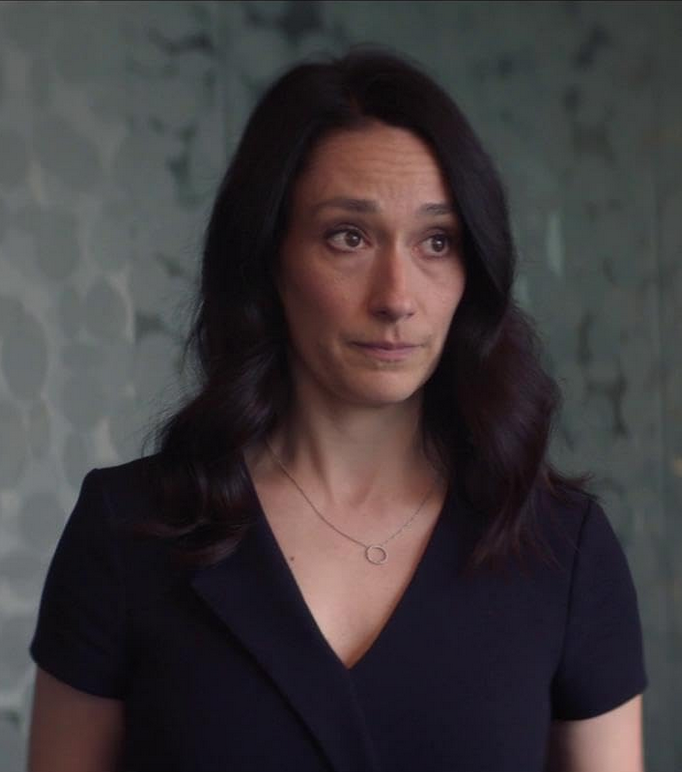
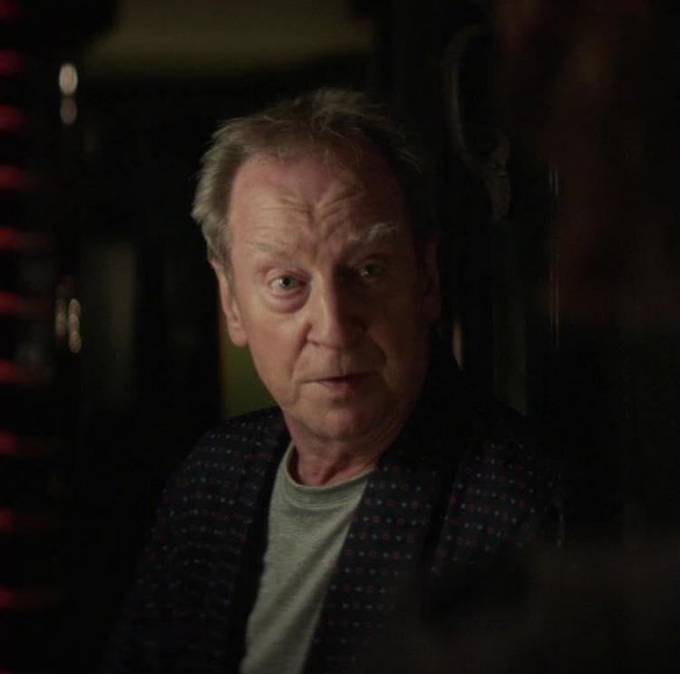
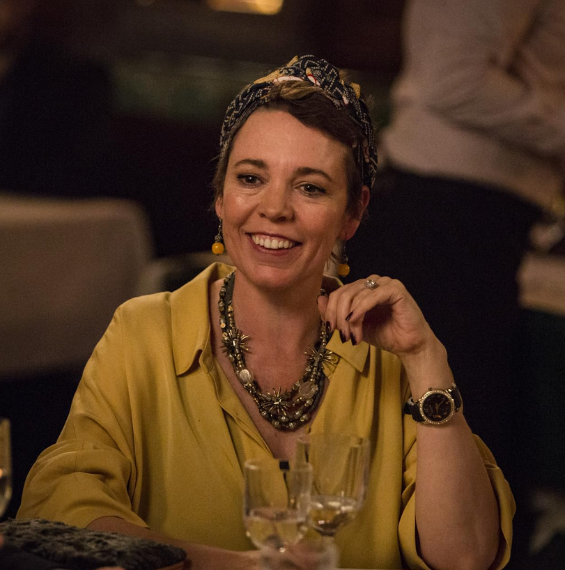
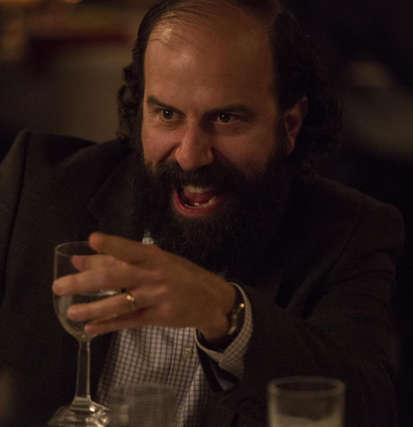
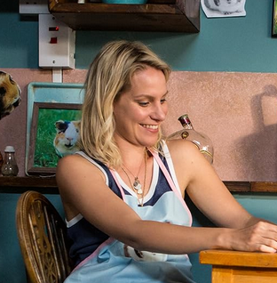
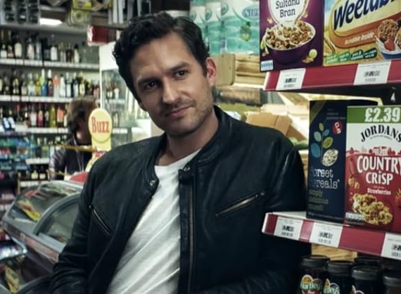

Fleabag
interprété·e par Phoebe Waller-Bridge
Personnage principalFFleabag is a thirty-three year old single woman and the main character of the eponymous series.
Fiche wiki ↗ → Voir les répliques dans le scriptinterprété·e par Phoebe Waller-Bridge
Personnage principalFFleabag is a thirty-three year old single woman and the main character of the eponymous series.
Fiche wiki ↗ → Voir les répliques dans le script
interprété·e par Sian Clifford
Personnage principalFClaire is a main character in the first and second series of the comedy drama Fleabag. She is Fleabag's sister. She was married to Martin, and was step-mother to his son, Jake. She has a strained relationship with her sister Fleabag, but obviously really loves her.
Fiche wiki ↗ → Voir les répliques dans le scriptinterprété·e par Andrew Scott
Personnage principalMThe Priest is a main character in the second series of Fleabag.
Fiche wiki ↗ → Voir les répliques dans le script
interprété·e par Bill Paterson
Personnage secondaireMDad is a main character in the first and second series of the comedy drama Fleabag. He is the father of Fleabag and Claire. His first wife died of cancer and he remarried his daughter's Godmother.
Fiche wiki ↗ → Voir les répliques dans le script
interprété·e par Olivia Coleman
Personnage secondaireFGodmother is a main character in the first and second series of the comedy drama Fleabag. She is Dad's second wife, and step-mother to Fleabag and Claire.
Fiche wiki ↗ → Voir les répliques dans le script
interprété·e par Brett Gelman
Personnage secondaireMMartin is a recurring character in the first and second series of the comedy drama Fleabag. He is Claire's husband.
Fiche wiki ↗ → Voir les répliques dans le script
interprété·e par Jenny Rainsford
Personnage secondaireFBoo is a recurring character in the first and second series of the comedy drama Fleabag. She was Fleabag's best friend, and co-owner of the cafe that the two of them ran.
Fiche wiki ↗ → Voir les répliques dans le script
interprété·e par Ben Aldrige
Personnage secondaireMArsehole Guy is a recurring character in the first and second series of the comedy drama Fleabag. He is one of Fleabag's on-again, off-again lovers.
Fiche wiki ↗ → Voir les répliques dans le script8 personnages encodés — 4 femmes, 4 hommes